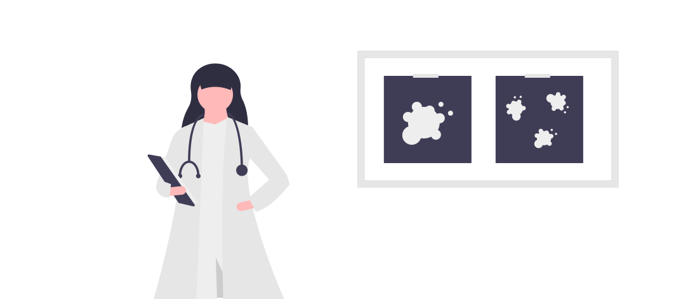
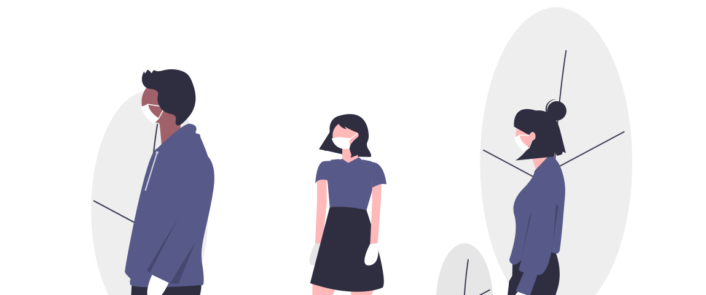

COVID-19

Coronavirus merupakan keluarga besar virus yang menyebabkan penyakit
pada manusia dan hewan. Pada manusia biasanya menyebabkan penyakit
infeksi saluran pernapasan, mulai flu biasa hingga penyakit yang
serius seperti Middle East Respiratory Syndrome (MERS) dan Sindrom
Pernafasan Akut Berat/ Severe Acute Respiratory Syndrome (SARS).
Coronavirus jenis baru yang ditemukan pada manusia sejak kejadian
luar biasa muncul di Wuhan Cina, pada Desember 2019, kemudian diberi
nama Severe Acute Respiratory Syndrome Coronavirus 2 (SARS-COV2),
dan menyebabkan penyakit Coronavirus Disease-2019 (COVID-19).
Mengingat evolusi terus menerus dari virus yang mengarah ke
SARS-CoV-2 dan perkembangan konstan dalam pemahaman kita tentang
dampak varian, definisi kerja ini dapat disesuaikan secara berkala.
Bila perlu, varian yang tidak memenuhi semua kriteria yang diuraikan
dalam definisi ini dapat ditetapkan sebagai VOC/VOIs/VUM.
Data Sebaran Indonesia
Update Terakhir: 15-02-2022
Protokol

Protokol kesehatan adalah upaya kesehatan masyarakat yang merujuk
pada sejumlah tindakan yang perlu dilakukan dalam rangka promosi
kesehatan dan pencegahan penyakit. Meski
vaksin telah diberikan, bahkan telah ada
vaksin booster untuk penguat bagi kalangan
petugas medis, pemerintah tetap menggalakkan masyarakat, dari
lapisan teratas hingga paling bawah untuk terus disiplin menerapkan
protokol kesehatan 5M. Sebenarnya, apa saja yang termasuk dalam
protokol kesehatan 5M yang diwajibkan sebagai salah satu cara
terbaik mencegah penularan vaksin
corona?
- Mencuci Tangan
Mencuci tangan secara rutin menjadi protokol kesehatan 5M yang
pertama dan dirasa efektif untuk mencegah penularan virus corona.
Agar hasilnya maksimal, kamu disarankan untuk mencuci tangan
setidaknya selama 20 detik dengan menggunakan air mengalir dan
sabun.
- Memakai Masker
Organisasi Kesehatan Dunia (WHO) menyebutkan bahwa penggunaan
masker hanya dilakukan untuk orang-orang yang terserang penyakit,
bukan orang yang sehat. Akan tetapi, pada kenyataannya, pandemi
yang masih belum usai dan terus memakan korban membuat penggunaan
masker pun diwajibkan untuk seluruh lapisan masyarakat.
- Menjaga Jarak
setiap orang wajib menjaga jarak setidaknya sejauh 1 meter dengan
orang lain guna mencegah paparan droplets dari orang yang batuk,
bersin, atau bicara. Pun, sebaiknya hindari berkerumun, tempat
ramai, dan berdesakan. Apabila tidak mungkin menjaga jarak, bisa
dibuat rekayasa untuk menghindari risiko paparan.
- Menjauhi Kerumunan
Menurut Kementerian Kesehatan RI (Kemenkes), masyarakat diminta
untuk menjauhi kerumunan saat berada di luar rumah. Ingat, semakin
banyak dan sering kamu bertemu orang, maka kemungkinan terinfeksi
virus corona pun semakin tinggi. Oleh sebab itu, hindari tempat
keramaian terutama bila sedang sakit atau berusia di atas 60 tahun
(lansia). Menurut riset, lansia dan pengidap penyakit kronis
memiliki risiko yang lebih tinggi terserang virus corona.
- Mengurangi Mobilitas
Virus penyebab corona bisa berada di mana saja. Jadi, semakin
banyak waktu yang kamu habiskan di luar rumah, maka semakin tinggi
pula risiko tubuh terpapar virus jahat ini. Oleh karena itu, bila
tidak ada keperluan yang mendesak, tetaplah berada di rumah.
Vaksin
Vaksin adalah produk biologi yang diberikan kepada seseorang untuk
melindunginya dari penyakit yang melemahkan, bahkan mengancam jiwa.
Vaksin akan merangsang pembentukan kekebalan terhadap penyakit
tertentu pada tubuh seseorang. Tubuh akan mengingat virus atau
bakteri pembawa penyakit, mengenali dan tahu cara melawannya.
Vaksinasi
Vaksinasi adalah pemberian Vaksin dalam rangka menimbulkan atau
meningkatkan kekebalan seseorang secara aktif terhadap suatu
penyakit, sehingga apabila suatu saat terpajan dengan penyakit
tersebut tidak akan sakit atau hanya mengalami sakit ringan dan
tidak menjadi sumber penularan.
Pelayanan vaksinasi COVID-19 dilaksanakan di Fasilitas Pelayanan
Kesehatan milik Pemerintah Pusat, Pemerintah Daerah Provinsi,
Pemerintah Daerah Kabupaten/Kota atau milik masyarakat/swasta yang
memenuhi persyaratan, meliputi:
- Puskesmas, Puskesmas Pembantu
- Klinik
- Rumah Sakit dan/atau
-
Unit Pelayanan Kesehatan di Kantor Kesehatan Pelabuhan (KKP)
Daftar Vaksin
Dalam pelaksanaan program vaksinasi COVID-19 di Indonesia,
pemerintah mengupayakan ketersediaan vaksin terpenuhi untuk
setidaknya 208.265.720 penduduk untuk tercapainya kekebalan
kelompok.
Upaya-upaya pengadaan vaksin ini dilakukan melalui perjanjian
bilateral dan perjanjian multilateral seperti COVAX Facility
bersama GAVI dan WHO, ataupun donasi yang diberikan oleh
negara-negara sahabat.
Badan Pengawas Obat dan Makanan Indonesia sudah memberikan izin
penggunaan darurat pada 10 jenis vaksin COVID-19, yakni Sinovac,
AstraZeneca, Sinopharm, Moderna, Pfizer, Novavax, Sputnik-V,
Janssen, Convidencia, dan Zifivax.
Masing-masing dari jenis vaksin ini memiliki mekanisme untuk
pemberiannya masing, baik dari jumlah dosis, interval pemberian,
hingga platform vaksin yang berbeda-beda, yakni inactivated virus,
berbasis RNA, viral-vector, dan sub-unit protein.